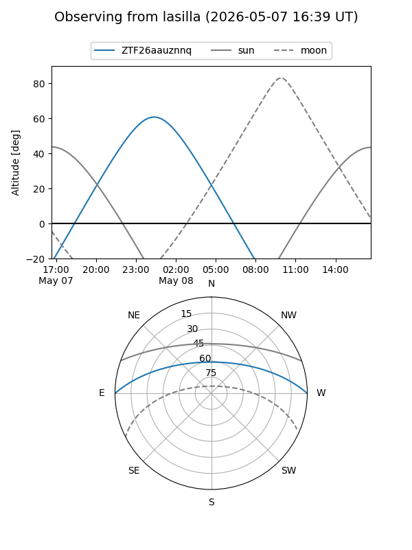
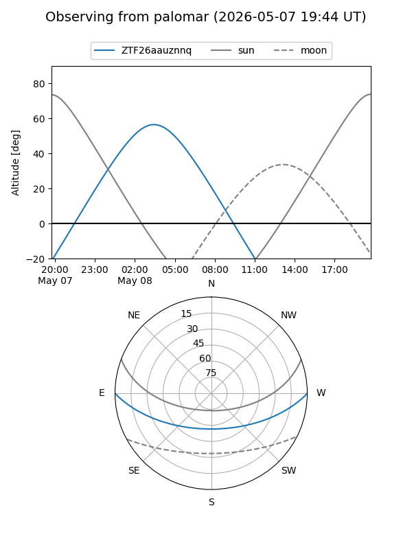

ZTF26aauznnq
Target ZTF26aauznnq at 2026-05-08 05:06
Aliases and brokers:
FINK: link
Lasair: link
ALeRCE: link
alt names
ZTF26aauznnq (ztf,fink_ztf)
Coordinates:
equatorial (ra, dec) = 160.2948,+0.03156
equatorial (HMS+DMS) = 10:41:10.76,+00:01:53.60
galactic (l, b) = (248.4231,+48.61805)
Flags:
Photometry:
last ztfg=19.88
1 ztfg detections
Lightcurve
Visibility


Additional plots